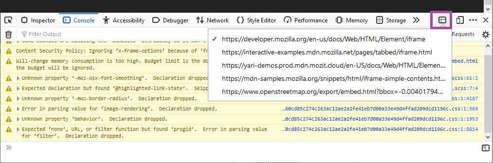

You can point the developer tools at a specific iframe within a document. The Inspector, Console, Debugger and all other developer tools will then target that iframe (essentially behaving as if the rest of the page does not exist).
{{EmbedYouTube("Me9hjqd74m8")}}
To set an iframe as the target for the developer tools:

The iframe context picker button feature is enabled by default (if it has been disabled the iframe button is never displayed). The feature can be re-enabled from the Settings menu, using the "Select an iframe as the currently targeted document" checkbox.